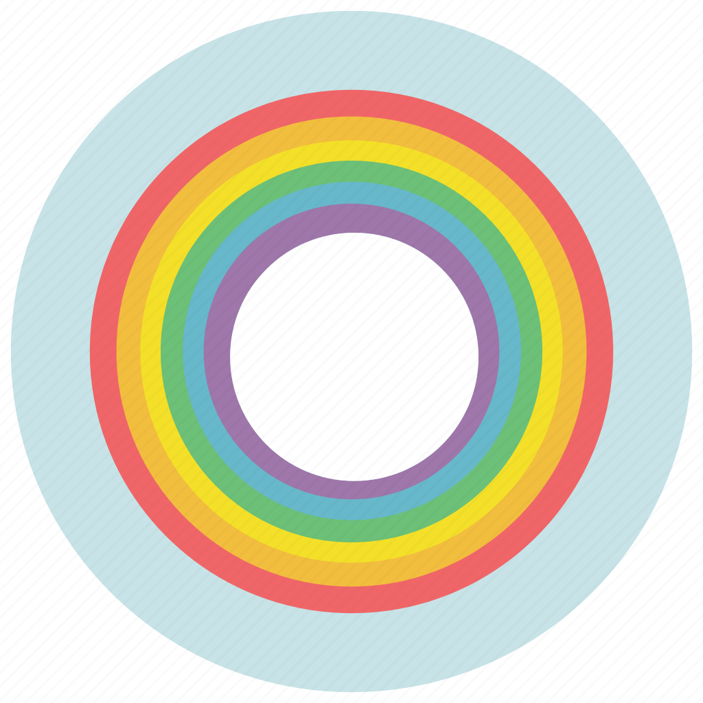

影像源代码
About
Terms
Copyright
Gitee
影像源代码
基于海量高分电影的动态交互展示平台。
空镜艺术

运镜色彩
符号意象
项目名词解释
🎬 空镜分布
空镜头，又叫“景物镜头”，是指画面中没有人。空镜头与常规镜头可以互补而不能代替，是导演阐明思想内容、叙述故事情节、抒发感情的重要手段。 空镜头常用以介绍环境背景、交代时间空间、抒发人物情绪、推进故事情节、表达作者态度，具有说明、暗示、象征、隐喻等功能， 在影片中能够产生借物喻情、见景生情、情景交融、渲染意境、烘托气氛、引起联想等艺术效果，在银幕的时空转换和调节影片节奏方面也有独特作用。
📸 镜头变化快慢
快慢镜头的速度是指特定的镜头在特定的时间内所能传送的光量。传送光量多的镜头被称为快镜头，传送光量相当少的镜头则被称为慢镜头。 不要把这里所说的快慢概念同镜头所能捕捉快速运动物体的能力相混淆，就像把"干"这个术语用于马提尼酒时实际上与相对湿度并没有关系， 把"快"这个术语用于镜头时同它凝固住快速运动物体的能力也没有什么关系；它只是用以描述镜头在特定的时间内所传送的光量。
📒 电影色彩
电影色彩是指电影中使用的颜色，包括角色服装、布景、灯光等方面的色调搭配。 电影色彩是电影艺术中十分重要的一部分，它能够传递情感、氛围和故事情节的暗示。 在电影制作中，通过对色彩的运用，可以实现一定的艺术效果，增强电影的表现力和观赏性。 同时，不同的电影类型或题材也会运用不同的色彩风格，比如喜剧电影通常会使用明亮、鲜艳的色彩，而恐怖电影则会使用暗淡、单调的颜色来营造紧张的氛围。
📝 人物情绪变化
电影人物情绪变化指的是电影中人物角色从开始到结束，心理和情感状态的变化过程。 这些情感状态可以是愉快、悲伤、痛苦、失望、恐惧、愤怒等等。在电影中，人物的情绪变化往往是情节发展的主线之一，它有助于推动故事情节的发展， 并揭示出人物的性格、动机和内心世界等信息。此外，通过观察人物情绪的变化，观众也可以更加深入地理解电影中所呈现的主题和意义。